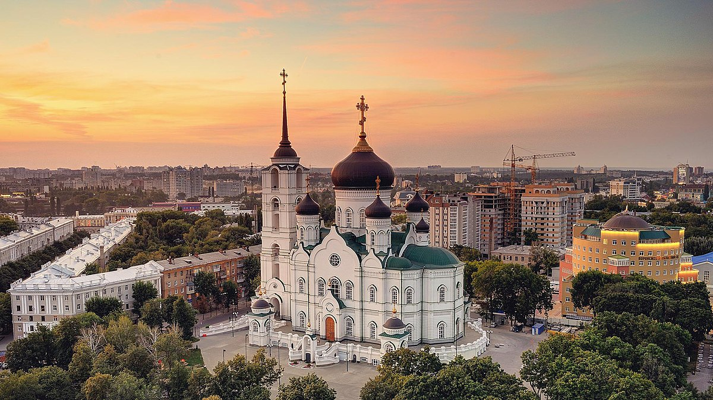
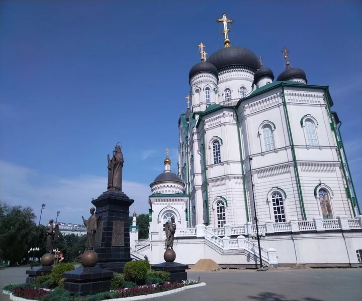

Воронеж: первое знакомство со столицей Черноземья
Воронеж
Сложность маршрута:
Количество участников:
5/10
от 7 до 25
Описание экскурсии:
Приглашаем вас на увлекательный тур по Воронеже — городу с богатой историей и уникальной культурой, расположенном в сердце Черноземья. Этот тур идеально подходит для тех, кто хочет узнать больше о нашем городе и его ярких достопримечательностях.
Что вас ждёт?
Исторический центр Воронежа:
Начнём нашу экскурсию с одного из самых красивых мест города — площади имени Ленина. Вы увидите величественные здания исторической архитектуры и узнаете о значении каждого из них.
Воронежский Кремль:
Заглянем в Воронежский Кремль, построенный в XVI веке. Вы узнаете истории о его строительстве, защитных функциях и роли в жизни города.
Театр кукол:
Посетим знаменитый Воронежский театр кукол, который удивит вас своими яркими представлениями и мастерством актеров.
Набережная Воронежа:
Прогуляемся по живописной набережной реки Воронеж. Здесь вы сможете насладиться красивыми видами, а также посетить уютные кафе и магазины.
Музей-усадьба Н. А. Лескова:
Увидим двор и усадьбу известного русского писателя. Узнаем о его жизни, творчестве и вкладе в литературу.
Кулинарные традиции:
В завершение тура вас ждёт дегустация традиционных блюд Черноземья в одном из гастрономических ресторанов города. Попробуйте освежающие напитки и блюда, которые порадуют ваш вкус!
Для кого этот тур?
Экскурсия подходит для семей, групп друзей и всех желающих познакомиться с культурой и историей Воронежа.
Присоединяйтесь к нам и откройте для себя все краски этого замечательного города!
Места посещения

Эта площадь — сердце Воронежа, окруженная великолепными зданиями с историей. Здесь вы сможете почувствовать атмосферу города, его динамичность и культуру.

Воронежский Кремль, построенный в XVI веке, представляет собой символ истории и защиты города. Его крепостные стены и башни не только впечатляют, но и рассказывают историю о прошлом.

На живописной набережной реки Воронеж можно наслаждаться спокойствием, красотой природы и уютными кафе. Это идеальное место для прогулок и отдыха.

Гриша
20 марта 2026
Этот тур был просто невероятным! Я узнал много нового и увидел красивые места.
Узнать больше

Анатолий
10 марта 2026
Мне очень понравилось! Особенно запомнился вечерний маршрут.
Узнать больше